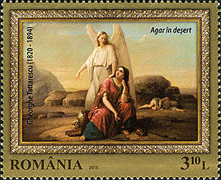
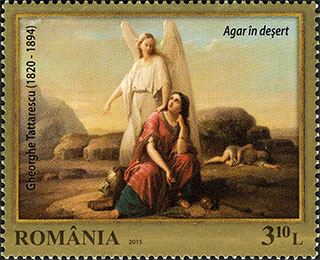
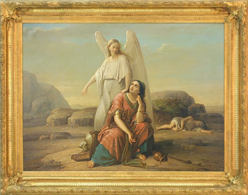
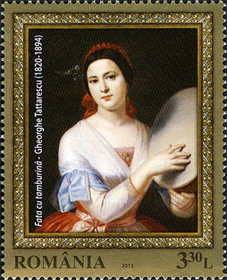
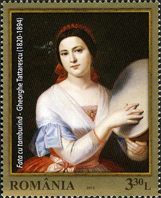
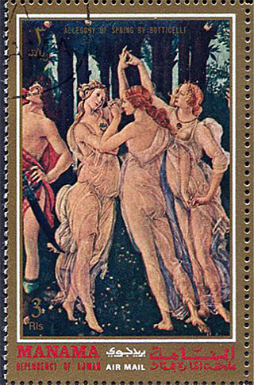
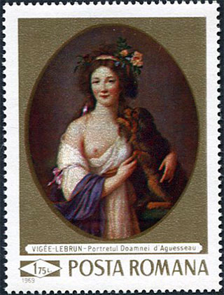

Back to "Dunes"?
Victor Manta, PWO *
The name Dunes is a slang term which designates stamps from certain countries in the Middle East (such as Ajman, Fujeira, Manama, Ras al-Khaima, Sharjah etc.), that in the late 1960s and early 1970s have invaded the world market philatelic. These countries are now part of the United Arab Emirates and are often called Trucial States. Colorful and attractive, these stamps often have nothing in common with countries they have "originated" and are usually ignored by serious collectors.
I suddenly remembered it when I saw the philatelic advertisement for the set "Reproductions of Art "issued on 23 January 2015 by the Romanian Post. I present below two stamps from the set of four values, namely those that reproduce paintings by the Romanian artist George Tattarescu.

These stamps, printed in London in quite small runs, are characterized by a fairly accurate color reproduction, what it easy to see if we compare them with the images of the original paintings. What struck me about them was the lack of originality of the designer, which has placed on both paintings some "frames" that looks so cheap that they better be missing. For comparison purposes I removed the unnecessary frame from the stamp.
The frame in which the picture is shown in the museum can be seen below. It is obvious that the designer's frame has nothing in common with that from the museum. We also regret that the wings of the angel on the stamp are almost touching the frame, unlike what was accomplished by the artist.
To the right of images of stamps issued by the Post, by using simple imaging techniques, I removed the frames, which in my opinion, could only gain from this transformation.
The remaining space was filled by the designer with a golden color that is supposed to reinforce the impression of the value of these stamps.

This idea of applying the gold color was used in the past on the Dunes and other related stamps, such as the stamp issued by Manama / Ajman, which presents an excerpt (The Three Graces) of the painting "Allegory of Spring" by the Italian painter's Sandro Botticelli.

In the past Romanian stamp designers have been careful to avoid striking similarities with this kind of stamps, even though plenty of Dunes were printed, and some even designed in Romania. I invite all collectors interested in this subject to visit my page (in Romanian) entitled "Printing stamps in communist Romania."
Finally let us take a look at the stamp issued by the Romanian Post in 1969, in the set "Reproductions of Art."
It shows the beautiful portrait of Madame d'Aquesseau by the French painter Élisabeth Louise Vigée Le Brun. This painting, like those of Tattarescu, is exhibited in the National Museum of Art of Romania. We note that this stamp uses the golden color with a certain economy, what has not hindered later problems, namely the emergence of frauds against the post.
A large amount of these stamps, like many others, was canceled as CTOs and could be easily find in the so-called stamps envelopes with prizes. Some unethical philatelic "dealers" of that time found a way to delete the cancellations that didn't adhere sufficiently on the "golden" surfaces and resold those stamps as unused to unsuspecting collectors. They then used these stamps for paying their mail, especially the one for foreign countries, exposing themselves, without even knowing it, to the risk of prosecution. Souvenirs, souvenirs.* About the author. Victor Manta is a known collector of the theme "Art on stamps", its philatelic website "Art on stamps" being a reference in the field and being often internationally awarded.
| Created 29.06.2015.
Revised: 15.10.2018. Copyright © 2015 - 2018 by Victor Manta, Switzerland. All rights reserved worldwide. |
|